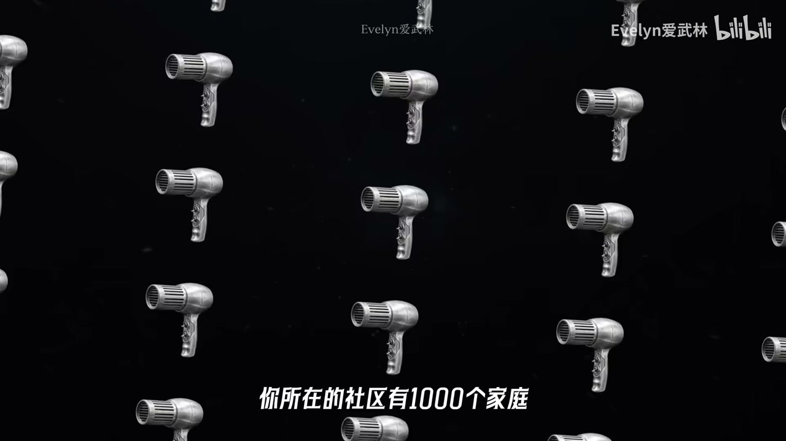
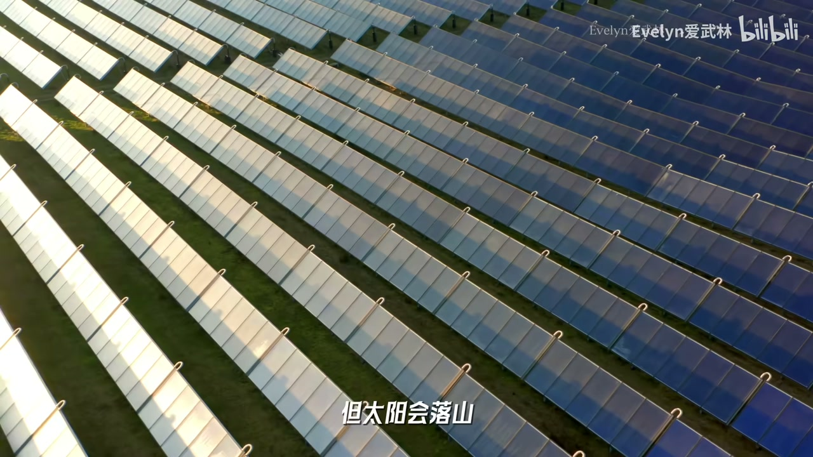
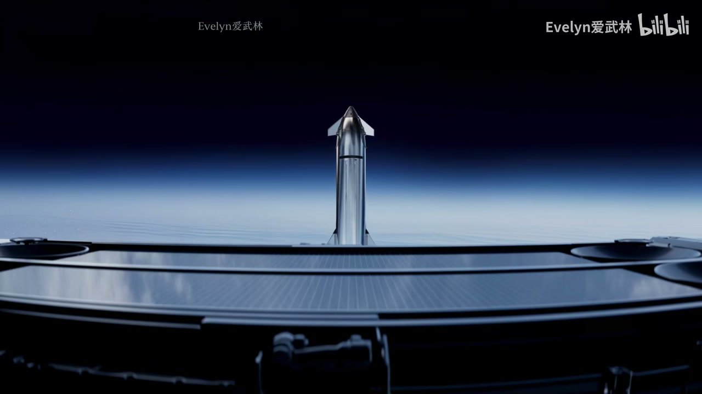
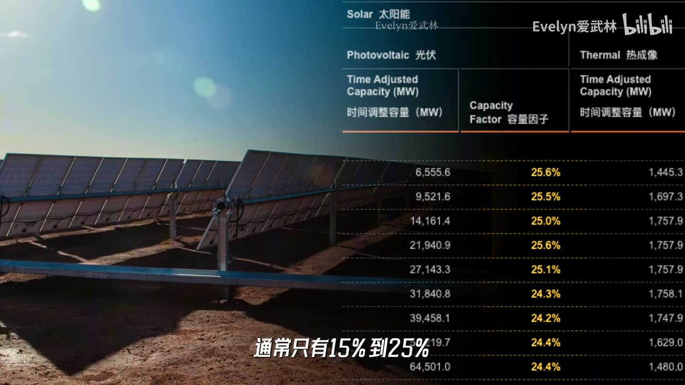
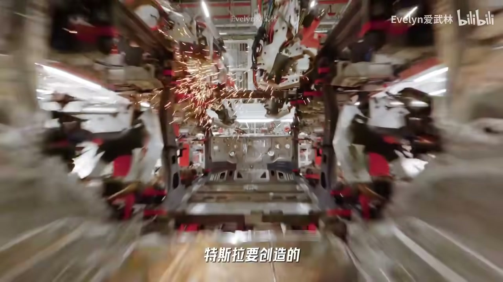
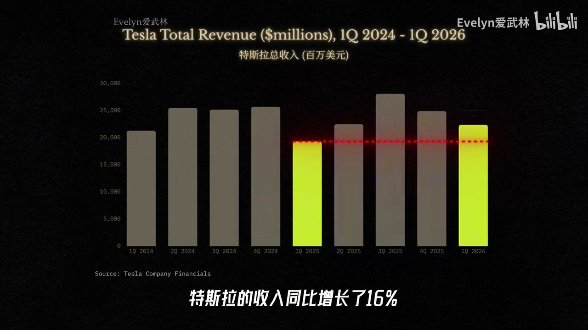
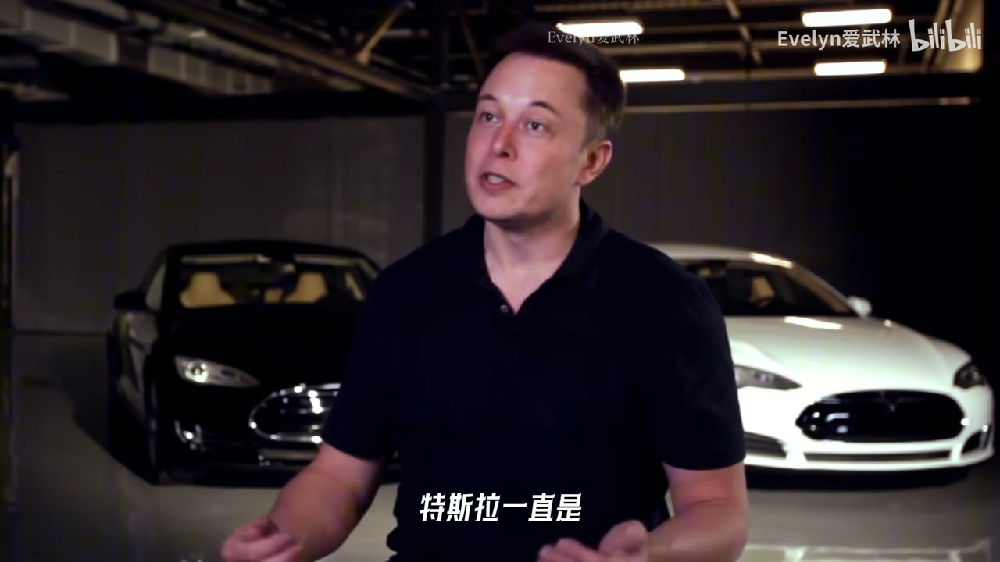
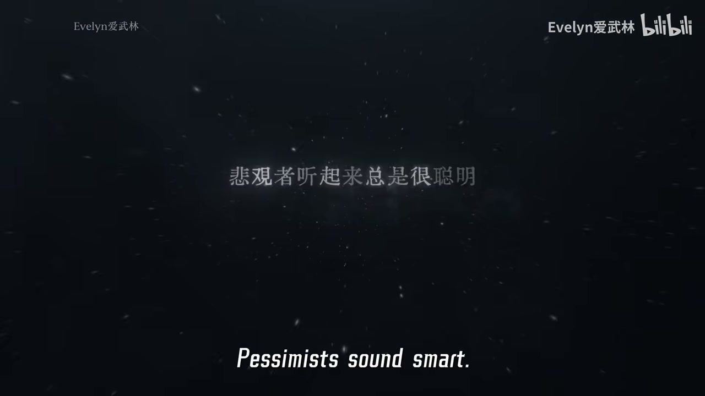
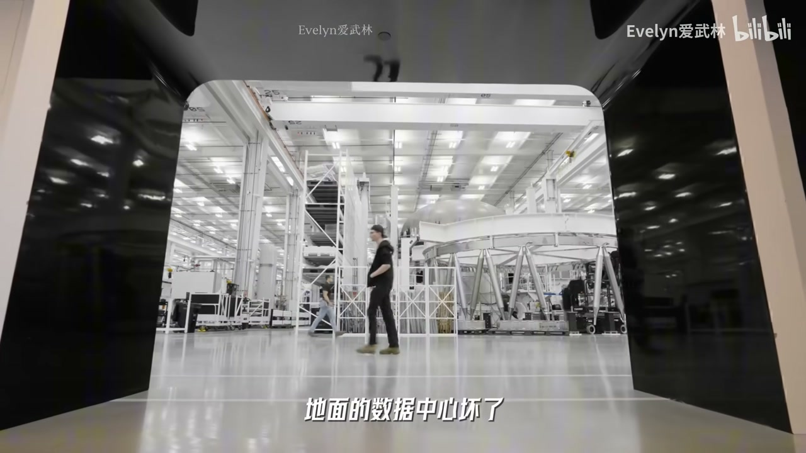

内容要点
能源瓶颈→轨道算力与星舰→月球发射想象；特斯拉在生态中是身体与数据；Q1 交付平平但软件订阅抬利润；质疑包括效率悖论、发射成本、在轨维护；阳谋写在宏图里，时间线常延期但压力驱动工程。
知识结构
吹风机类比功率阶梯；电厂节奏跟不上 AI。
轨道算力、星舰、月球；车/Robotaxi/Optimus 是 AI 躯壳。
软件利润；宏图历史类比；杰文斯与工程风险。
用「物理 AI 平台」而不是「季度交付车企」阅读特斯拉；乐观有洞，悲观有清单，关键看你信哪一部分会落地。
00:00-06:30功率阶梯与线性电力
开场断言：特斯拉终极目标不是把车卖给你；Robotaxi、机器人配送、电价与电网都会被卷入。多数人盯交付与毛利时，马斯克视野已到太瓦级算力与月球距离。
用吹风机功率类比：社区同时吹风→兆瓦，数据中心→百兆瓦，训练集群→吉瓦级，仿佛百万吹风机同开，局部电网可能跳闸；再叠加机器人与自动驾驶进入物理世界，需求可指向百吉瓦甚至太瓦。芯片与模型迭代快，电厂审批建设慢、核电更慢，太阳能有昼夜——AI 竞争尾声或是能源竞争。


06:30-14:30太空解法与特斯拉定位
解法不是太空发电传回地球，而是把最耗电的计算搬走，只传回结果：轨道 AI 卫星展开太阳能板，效率潜在数倍于地面，但太瓦级意味着海量卫星与巨大板阵面积。关键障碍是入轨物流——星舰若真正高频低成本复用，太空物流才像基础设施；芯片自建、xAI 做脑、地面物理需求来自自动驾驶与机器人。
更大想象：月球低重力与资源支持电磁弹射（Mass Driver）向轨道投送，降低对地球发射的依赖——内容写在 2025 宏图相关叙事里。回头看特斯拉：第一代身体是车与 FSD，Robotaxi 转移驾驶劳动，Optimus 瞄准广义体力劳动；SpaceX 物流、算力硬件、xAI 大脑，特斯拉让智能下场干活，并积累雨天刹车、抓取力度等互联网爬不到的现实数据与制造 know-how。



14:30-23:52软件利润、宏图历史与工程风险
2026Q1 叙事：交付平平、储能亦非高点，但收入与毛利因 FSD 订阅等软件服务改善——车成为持续数据采集与订阅节点。停产部分旧车型、叙事转向 Robotaxi/Optimus，是平台转型信号，不等于已成功；监管与延期仍在。
华尔街用季度交付模型，只能看到压力，看不到宏图里已写明的远未来。电动车与 Starlink 曾被当成天方夜谭。质疑清单：模型效率是否消解太瓦需求（杰文斯悖论：效率或成油门）；星舰成本降不下来则轨道算力是实验；在轨维护、散热、监管与安全恐惧。马斯克用极端时间线压迫现实，常延期，但行动者属性明确。读特斯拉需要想象力，也需要把风险逐条钉在工程上。




完整转录（536段）
Whisper 转录；已校正：阳谋、吉瓦/太瓦、星舰、Starlink、宏图（Master Plan）、杰文斯悖论等。口播功率类比以视频定义为准。
你一定不知道
你现在看到的
和特斯拉有关
他的终极目标
不是要卖车给你
可马斯克的世纪阳谋
99%的人
还没有看懂
如果你认为特斯拉
只是一家电车公司
那么你可能错过了
这个时代
最有野心的一场布局
如果你认为
你和这些风马牛不相及
很遗憾
这些变化正在像空气一样
悄无声息的
渗入你的生活
在不久的将来
你叫的车可能没有司机
你点的外卖
可能由机器人分减配送
甚至你家里的电价
城市的电网
工厂的生产成本
都会被这场变化
时刻牵引
无论你喜不喜欢
AI时代已经到来
当大多数人
还在盯着特斯拉车的
交付量和毛利率时
马斯克的视野
已经到达了挂在太空的
太瓦级算力中心
甚至伸向了
38万公里外的月球
为什么一家表面上的车企
要不停地折腾自动驾驶
折腾机器人
甚至是能源 算力
这些看似毫无相干的领域
最终都会汇聚成异点
AI不会永远是那个
看不见 摸不着的东西
它会通过不同的物理躯壳
进入现实世界
今天马斯克这场疯狂
但逻辑清晰的大布局
我会带你看懂它
要理解这场大布局
我们得先回到你家的吹风机
一个普通的电吹风
功率是1000瓦
很多人分不清电量和功率
如果把电能比作水
电量就是桶里接到的总水量
而功率就是水龙头喷水的流速
当你打开吹风机的那一秒
你就是要求电王
以1000瓦的速度向你家里喷水
如果只有你一个人
在吹风机里吹水
那你就是要求电王
以1000瓦的速度向你家里喷水
如果只有你一个人
在吹头发
电网很轻松
但如果此时
你所在的社区
有一千个家庭
同时打开了吹风机
流速就变成了1兆瓦
1兆瓦
已经接近一颗大型AI卫星
在太空时刻运转所需的流速
在这一集
你附近的变电站还能从容应对
如果规模再扩大到10万个家庭
那就是100兆瓦
到了这个量级
我们就正式进入了
大型数据中心的用电范围
在这个级别
目前的城市电网
还可以通过局部增强来勉强适应
但真正的能源瓶颈从这里开始
为了训练顶级大模型
巨头们正在推进超级算力集群
流速要求直接跳到了一吉瓦
一吉瓦是这个什么概念
就是100万个吹风机
在同一秒钟被同时打开
那现有的电力系统
有可能瞬间就要跳闸了
如果没有提前扩容和变网设计
很多区域电网很难在一瞬间
承接这样的功率负荷
那为了维持这个流速
你几乎要在这座数据中心旁边
配一座大型核电站
24小时全功率的向里喷电
这就是阻碍AI进化的物理瓶颈
AI的需求是指数级扩张的
10倍、100倍、1000倍
但物理世界的扩张却是线性的
芯片可以一代一代升级
模型可以几个月就迭代一次
但电厂不会平地拔起而起
电网也不会一夜之间变宽
太阳能当然是重要的补充
但太阳会落山
AI数据中心不是白天上班
晚上睡觉的工厂
它要的是24小时的稳定功率供给
电力是一个重资产
长周期强监管的传统行业
建设一座常规电厂
从选址、审批、并网到最终的投产
往往需要数年
而建设一座安全达标的大型核电站
周期更是长达10-15年
同时受到地理水源和核监管的重重限制
所以核电当然是极好的补丁
但它不是一颗能随时插上的充电宝
当AI的需求已经开始指数及跃升时
电力系统却还在按照传统工业的速度
一点点的缓慢挪动
这就是问题的核心
过去绝大多数国家的电力系统
并不是按照AI算力突然爆发来规划的
原本够用的电网在面对这种新型复合时
突然显得太窄太急了
如果按照马斯克的设想
AI不止是帮你写邮件、画图、聊天
而是进入了医院、工厂、物流、科研、娱乐
自动驾驶让机器人代替人类工作
开始实施判断、吞理、干活
那么功率需求就会继续往上跳
从一吉瓦到一百吉瓦
甚至是一太瓦
一百吉瓦是什么概念
就是一亿个吹风机同时打开
如果这套系统连续运行一年
消耗的电量接近一个大型八大经济体
一年的用电规模
而一太瓦就是一千吉瓦
也就是十亿个吹风机同时打开
这个量级已经是全球级电力系统
所需要面对的共同的终极命题了
想象一下
为了使AI发展不受制约
人类必须在未来的数年内
给现有的电网叠上一层庞大的新需求
那地球的电网
真的会被这些吹风机烧到冒烟了
所以很多人已经意识到
AI最后的竞争可能并不是模型和算力的竞争
而是能源和电力的竞争
如果不想让AI的进化在这里停滞
或许可以跳出地球的限制
去寻找一个能支撑指数级增长的新空间呢
于是马斯克想出了一套惊人的解法
你现在看到的是
一颗未来在轨道上飞行的AI卫星
它不是传统的通信卫星
你可以把它理解成一座被搬到了地球轨道上
绕着地球飞行的小型移动数据中心
它进入轨道后会展开巨大的太阳能板
接收太阳辐射 开始自己发电
然后驱动内部的AI推理芯片和服务器集群
去处理地面 交给他们的海量任务
那计算完成后 它把结果发回地球
注意 这里破解地球能源平静的思路
并不是要在太空发电 再传回地球
而是直接把最耗电的计算过程搬走
只传回计算结果
因为在物理世界里 电的远距离传输会耗损
但数据的传输容易得多
这并不是什么科幻故事啊
GPS卫星在天上给你定位
天气卫星监控云层
Starlink在天上给飞机 船和极偏远的地区
转发互联网信号
这早已是我们的日常
只是过去的卫星主要负责通信 导航 遥感
而未来的AI卫星负责计算
那为什么要把计算搬到天上呢
在地面上 同样一束阳光要穿过厚厚的大气层和云层
强度大约只有每平米1000瓦
但在太空 少了这些耗损
接收到的能量会多出40%左右
更重要的是 地面会有黑夜 阴天和季节更替
全年真正有效发电的时间通常只有15%-25%
但在轨道上 虽然卫星也会进入地影
但几乎可以连续直射阳光
有效时间是地面的3-5倍
这意味着 同样一片面积的太阳能板
放在轨道上的效率 比较理想的状态下
可以达到地面的4-7倍
那听到这里你可能觉得 这不才几倍吗
也就那样啊
那我们再来看
要支持一颗1兆瓦公寓的卫星
相当于同时打开1000个吹风机
需要大约2500平方米的太阳能板
半个足球场那么大
如果你想要100吉瓦 就需要10万颗这样的卫星
那如果你想要1太瓦 就是100万颗
那到了1太瓦这个级别
太阳能板的总面积会达到2500平方公里左右
这相当于大约4个新加坡的大小
在地球上 你要找出一片相当于4个新加坡的土地
还能配上储能 审批和巨大的散热冷却系统
还那么简单吗
所以当地面间电厂的速度缓慢
赶不上AI的需求时
当太阳能在地面的效率低占地质大时
对比之下 也许AI卫星的解法并不是什么天方夜谭呢
不过这里有个关键的障碍
这些卫星怎么上去呀
所以马斯克需要太空物流
用飞船把地面上测试好的算力模块
像集装箱一样高频 低成本的送入轨道
如果 Starship 真能做到大运力可附用高频发射
把每次运输的成本降下来
那么太空物流就会从想象变成像快递一样的基础设施
他还需要海量的芯片放到AI卫星上
来支持他物理世界无尽的AI需求
可现有的工厂在量级上都是无法支持的
所以马斯克还要自己造
那么物理世界无尽的AI需求又是从哪里来的呀
自动驾驶
Robotaxi
机器人等等
也许以后还会有新的物理媒介
谁知道呢
比如说机器宠物之类的
那么连接这些所有的AI大脑就是XAI
到这里我们就复现了马斯克太空经济的全貌
你也可以叫马斯克生态
看似互不相干的公司实则各司其职 环环相扣
但如果你以为把AI算力搬上星际轨道就是终点
那你还是小看了马斯克的野心
因为只是运一个AI卫星是不够的
他的目标是从100兆瓦到1太瓦
甚至更高的量级啊
组成一个庞大的AI算力网络
那一旦进入这个规模
如果所有的材料都依赖地球发射
成本和复杂度依然会有天花板
那从哪里发射可能更经济呢
这一集确实开发我们的想象力啊
月球 没错 月球
因为月球上有丰富的矿产资源
引力也只有地球的六分之一
而且几乎没有大气层
从月球表面把物资送入轨道
所需要克服的阻力和能量远低于从地球发射
如果在月球上建一条类似于磁悬浮列车的电磁发射轨道
也就是Mass Driver
就有可能把材料燃料和结构件直接加速后
甩入太空的指定轨道
马斯克设想用他的物流系统
把他的AI物理大军运到月球
在那里建一个月球工业基地
来实现从月球发射AI卫星
同时维护AI卫星网络的任务
甚至一步步建立更完整的太空工业系统
那至此我们才真正说完了他的世纪阳谋
其中的很多内容发表在了
特斯拉2025年9月的《Master Plan / 宏图》第四篇
所以这并不是我脑补的科幻啊
他已经告诉你了
他要用地球以外的资源和空间
给人类提供充足的算力和生产力
同时尽量不破坏地球的生态
让机器人代替人类去做繁琐危险的劳动
让智慧不再受算力和能源的约束
这就是他构想的那个
消除稀缺性的属于全人类的
可持续的丰饶时代
你能想象的最开心的未来是什么
这是你能想象的
最开心的未来是什么
怎么样啊
马斯克的这张大饼你啃得下吗
说实话我是差点没啃下来
到这里我们再回头看特斯拉
你还觉得他只是一家卖电车的公司吗
马斯克这套生态里
特斯拉要创造的不是一款更便宜的电动车
也不只是一个更聪明的自动驾驶软件
他真正要创造的是一只进入物理世界的AI大军
电车是他的第一代身体
自动驾驶系统判断路况激化路线
替人完成从A点到B点的位移
而Robotaxi是更彻底的机器劳动
它不是简单的出租车业务
它本质上是把司机这份劳动
从人完全转移到了机器
而Optimus是第二代身体
它延续了特斯拉在汽车上积累的
视觉感知、空间理解、边缘计算和工业制造能力
但把任务从开车扩展到了更复杂的现实世界
工厂、仓库、家庭、物流
甚至未来更危险、更偏远的工作环境
比如说月球
如果说自动驾驶系统和Robotaxi替代的是驾驶劳动
那么Optimus要瞄准的就是更广义的体力劳动
未来也许还会有第三代、第四代身体
不一定是车,也不一定是人形
甚至不一定是地面形态
但它们的核心非常统一
让AI拥有进入物理世界的载体
这也是特斯拉在整个马斯克生态里最特殊的位置
SpaceX负责太空物流
芯片代工/自建产能叙事负责算力硬件
XAI负责大脑
特斯拉负责让这些智能真正下场干活
这件事不能小看
因为AI如果只停留在屏幕里
它需要的是网页、文字、图片和影像
但AI如果要进入现实世界
它需要的是更多的数据
比如它要知道车在雨天怎么刹车呢?
行人突然横穿马路怎么判断?
机器人抓一个杯子要用多大的劲?
工厂里的零件怎么办?
一条产线会在哪里卡住?
那一个动作失败了,下次要怎么改呢?
这些数据不是能从互联网上爬出来的
而是来自真实世界里一次次的学习、失败、修正、再学习
这种现实世界的数据才是特斯拉最深、最厚的护城河
它不仅是马斯克生态里最重要的算力需求方
它也是现实世界数据的生产方
这些数据会强化特斯拉自己的自动驾驶和机器人系统
未来也可能与XAI协同让整个马斯克生态变得更智能
同时,特斯拉还在不断的积累工业制造的knowhow
从车到储能系统到机器人
特斯拉的机器人把复杂的硬件用仅可能低的成本规模化生产
这套能力会反补整个马斯克生态
因为未来,不管你要造AI卫星、机器人、能源系统
还是造月球基地里的自动化设备
最终都绕不开一个问题
你能不能把一个复杂的系统变成可复制、可量产、可迭代的工业产品
这正是特斯拉最擅长的领域
现在我们来看点实际的
特斯拉2026年第一季度的财报揭示了一件很重要的事
这家公司正在从电车向物理AI平台惊险一跃
为什么说惊险呢?
因为如果你只看车,特斯拉这个季度并不亮眼
交付约为35.8万辆车,生产约为40.8万
储能部署8.8吉瓦时
交付数字不算惊艳,能源部署也低于上一季度的高点
你会觉得它遇到的平静
车卖的没有以前快了,库存变多了
中国市场的竞争好像也更凶险了
但如果只看这些,你会错过更本质的变化
在交付平平的情况下
特斯拉的收入同比增长了16%
毛利率不降反升,总毛利率提升到了21%
这背后最核心的推手
就是自动驾驶的活跃订阅用户达到了128万
软件和服务收入在利润结构里的占比显著提升
这意味着特斯拉的价值越来越不是一锤子买卖
车卖出去之后,故事才刚刚开始
它持续产生软件订阅费,贡献驾驶数据
持续成为AI训练的活体节点
传统车企卖的更都是硬件
而特斯拉卖的既是交通工具,也是数据采集器
也是算力需求源,更是未来机器劳动网络里的一个终端
如果说Model S和Model X代表的是旧的特斯拉
Model X证明了,电动车可以不是廉价小玩具
而是性能、设计、科技感都能打的高端产品
Model X证明了,特斯拉可以从小众跑车走向主流家庭
但当特斯拉把它们都停产了
开始把产能和叙事中心转向了Robotaxi和Optimus时
这是一个信号,旧时代,谢幕了
自动驾驶和Robotaxi的上限是物理AI平台的开场
当然,这并不意味着转型已经成功
还有很多监管风险和技术障碍依然是摆在眼前的挑战
而且如果你是长期跟踪特斯拉的老观众
你一定知道马斯克通常会给出最激进的时间线
放最狠的话,然后经常性的延期
他2006年成录的愿景可能到2026年才刚刚看到曙光
但如果你亲自试过他最新的自动驾驶系统
或者看到在工厂里工作的机器人
我相信你会和我一样
但是一点点触碰到那个想象中的未来
那么当特斯拉展示出物理AI平台的出行时
你就不能再用一家电车公司的标准去衡量它了
这可能就是华尔街经常误判特斯拉的原因
实际上特斯拉一直是资本市场上最具争议
也最常被做空的公司之一
因为它从来不是一个能轻易塞进传统故事模型的乖孩子
传统投资人习惯看当下
看这个季度的交付量,毛利率变化
库存天数,竞争价格占,现金流波动等等
这些数据当然非常重要
但如果你的视线只盯着这些
你只能看到特斯拉此刻的压力
从而彻底忽略了它布局未来的野心
它一直是一个更加关于未来的创新型公司
而它的未来非常远
回看马斯克的几份Master Plan / 宏图
你会发现它从来没有遮遮掩掩
路线图一直写得明明白白
2006年的Master Plan / 宏图第一篇
讲的是如何从一辆昂贵且小众的电动跑车起步
逐步把电车推向大众
虽然现在我们已经习惯看到电车满街跑
但当时很少有人相信电动车会有未来
电池太贵,续航太短,充电太难
传统车企随时可以碾压你
这些质疑听起来都很合理
但短短二十年
电动车不再是边缘产品
中国的新能源汽车百花齐放
电车渗透率已经超过了一半
Model Y也已然成为了全球最畅销的车型之一
同样的一幕也发生在SpaceX身上
曾几何时,私人公司独立搞火箭
再把全球卫星互联网做到大规模商业化
被视为天方夜谭
可现在呢
Starlink已经成了全球最大的卫星网络
Starship虽然还在路上
但它已经让低成本、高频率、重载发射
不再只是科幻小说里的桥段
他们需要确定性
需要财务数据的支撑
要看可比公司
要看估值的毛
但特斯拉最重要的部分
恰恰是还没有完全出现在财务报表里的东西
Robotaxi刚刚在达拉斯和休斯顿上线
Optimus还在工厂里试错学习
太空算力和月球工业更是遥远的愿景
物理AI还只是雏形
正如今天我没有像一个传统的分析员那样
带你去抠财务报表一样
如果你只用车企的模型去衡量它
你永远看不懂它
它也永远贵得离谱
这也是为什么
过去十几年里
很多人一边觉得特斯拉荒谬
一边眼睁睁地错过了它最惊人的行情
我很喜欢一句话
悲观的人可以指出每一个风险和漏洞
显得严谨周密
而乐观的人常常显得天真
但真正能改变世界的恰恰是那一点
不合时宜的乐观
看特斯拉这种公司需要想象力
而大多数投资人缺乏想象力
当然这并不意味着马斯克的宏图第四篇
无懈可击
恰恰相反
在工程和商业上
它有很多值得质疑的地方
那第一个质疑
是能源瓶颈会不会被模型效率解决
有人认为如果未来芯片更省电
模型更高效
AI真的需要一泰瓦这种夸张的能量吗
但马斯克的判断更接近杰文斯悖论
效率提升
不一定会减少总消耗
反而可能释放更多的需求
就像灯泡越来越省电
人反而点亮了更多城市
比如汽车发动机效率提高
人反而开得更远
物流跑得更频繁
那AI也可能一样
当单次推力变得更便宜
并不会让人少用AI
反而会让AI无处不在
所以效率可能不是刹车
而是油门啊
那第二个质疑
是星舰的经济性
整个太空AI叙事的基石
基于星舰能否实现真正的高频
低成本复用
如果发射成本降不下来
AI卫星网络就只能是昂贵的太空实验
无法成为普惠的基础设施
第三个质疑
是太空硬件的维护
地面的数据中心坏了
工程师可以随时维修
但在轨道上辐射
极端温差和微隐时带来的损害
那维护难度完全不在一个量级
除此之外
还有三个问题
除此之外
还有散热监管等等质疑
甚至有人已经开始害怕
AI的大规模应用会给人类带来毁灭
整体来说
红土第四篇的物理逻辑虽然成立
但工程和商业化还有很长的路要走
没有人真的知道这条路最后能不能走通
不过唯一确定的是
马斯克是一个行动者
他从来不等风险消失在行动
他习惯先抛出目标
再利用这种极端的压力
倒逼工程资本和供应链去追赶
这也是为什么他经常延期
他的时间线可不是对现实的预测
而是用来压迫现实世界加速的工具
这确实非常让人崩溃
但也正是这种极端的目标感
推动了许多看起来不可能的事儿
一点点变成了现实
现在人们对太空AI的质疑
性质不就和当年对电动车
对可回收火箭是一样的吗
几十年后当我们回头再看这家公司时
也许会觉得好笑
我们当年怎么会只把它看成一家电车公司
如果你完全不相信物理AI
不相信机器劳动会成为新的生产力
不相信太空算力
那么特斯拉的固执确实贵得离谱
但如果你认为哪怕只有一部分成为现实
那么特斯拉的故事可能才刚刚开始
这不是说不可以错过
但我认为可能会正确
是你爱的未来